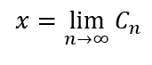
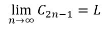
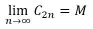
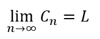
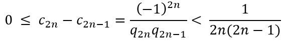
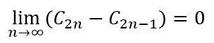
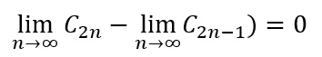
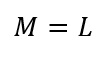

Fracción continua infinita simple
Podremos dar una definición precisa de una fracción continua infinita a través del siguiente teorema:
[1.] Teorema: Si [a1, a2, a3, . . .] es una fracción continua simple infinita y Cn = pn⁄qn es su n–ésima convergente, entonces existe un número real x tal:

las convergentes impares forman una sucesión creciente y acotada superiormente de números reales, por lo tanto, forman una sucesión convergente. Similarmente las convergentes pares son una sucesión convergente ya que forman una sucesión decreciente y acotada inferiormente. Supongamos que:

Y

Veamos que L = M, lo cual implica que

Tenemos:

Luego:

Y por ende:

Y es decir:

Como se quería demostrar.